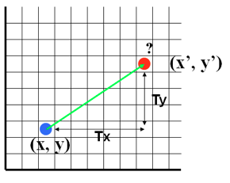
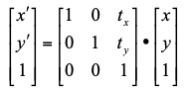

THEORY :
-
The geometrical change of an object from a current size/shape to new size/shape with change in the coordinates
of the object is called as transformation.
-
A translation moves an object to a different position on the screen.
-
The transformation is needed to manipulate the initial object coordinate and display the modified object
coordinate with the help of translation factors in X-direction defined as ‘Tx’ and Y-directions defined as ‘Ty’
as shown in figure below:

-
We can translate a point in 2-D by adding translation coordinate (Tx, Ty) to the original coordinate (x, y) to
get the new coordinates (x' ,y')
x' = x + Tx;
y'= y + Ty;
-
A translation moves all the points in the object along the same straight-line path to new positions w.r.t Tx and
Ty.
-
Translation can be represented with the use of Homogenous coordinate system using matrix representation as

where , P(x ,y) coordinate will be translated to P’(x’, y’) with respect to the translation factor ‘tx’ and
‘ty’.